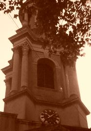

St. Paul, ShadwellDetails of the Bells
Sound clips may be heard upon application to: C.J. Cooper (Rounds on 8 and Grandsire Triples) Ringing Times:NO RINGING AT PRESENTConductor & Steeplekeeper: C.J. Cooper History1656 - A church was built on the site of the present one. 1670 - According to Shipway there was a ring of six erected in the tower of that church weighing 14cwt. The tower was "carried up without ornament and was terminated with balls at the corners"
1728 - Captain James Cook was born in Upper Shadwell on Oct 7th. He was married at Barking on Dec 21st 1762. The Banns were read at Shadwell three Sundays prior to this "Captain James Cook, batchelor of St Pauls Shadwell, and Elizabeth Batts of St Margaret's, Barking, Essex. This is for the first/second/third time of asking. 1770 - 1790 Between these dates John Wesley preached at least 10 times at St Pauls between these dates. The last entry in his 'Journal' reads "Sunday October 24th 1790" I explained to a numerous congregation in Spitalfields Church 'The whole armour of God". St Pauls Shadwell was still more croded in the afternoon, while I enforced that important truth 'One thing is needful' and I hope that many even then resolved to choose the better part." Wesley was 87 when he made this entry. Within five months he was dead. 1810 - A fall of a small part of the ceiling near the pulpit shortly before Divine Service one Sunday morning caused the congregation considerable alarm, and they crowded out of the building in confusion and consternation and "dispersed in every direction". Upon expert examination and a careful survey the Church was declared unsafe for use for Divine Service, and was shut up for use, except for Christenings and burials. Marriages took place at St George-in-the-East. 1812-1844 RECTOR Charles Webb Le Bas. MA. 1816 - After a good deal of discussion it was resolved to demolish the church. By 1816, most of the previous edifice had gone. 1819 - The old church having been razed to the ground, preparations were made for the erection of a new 'Waterloo Church', paid for by monies raised from the Battle of Waterloo. Shadwell was the most expensive of all these 'Waterloo Churches' A new ring of eight bells was cast by Thos Mears II for the tower from the metal of the old bells, with additional metal. 1820 - The present Church was built by John Walters. The total cost of the building of the Church and including all interior fixtures was £16,500. The bells were hung in a new wooden frame. The bells were very large considering the slender proportions of the tower. The installation might be described as a 'shoe-horn job'. Tuesday Oct 2nd 1821 - The first peal, 5040 Grandsire Triples was rung by the Junior Society of Cumberland Youths, who appear to have provided ringing at this period at a number of other towers in the vicinity - on the 8 at All Hallows, Barking by the tower, the old Lester and Pack 8 at S Matthew Bethnal Green (bells destroyed by fire in 1860) and at St Dunstan Stepney. Two days after this peal, the architect of the church, John Walters died, aged 39. 1844-1846 RECTOR Thomas Appleby. MA. 1846-1862 RECTOR Benjamin Cox Sangar. MA. 1849 - A receipt from Thos Payne, Gun and Brass metal dealer, Holborn Hill (found under the ringing room floor in the recent restoration) seems to denote that a new bearing had been turned for one of the bells (possibly the treble). 1862 - 1882 RECTOR Brenchley Kingsford. MA. 1882-1912 RECTOR Edward Bray MA; TCD. 1840's - 1900 - The Ancient Society of College Youths appear to have provided the ringing between these dates, probably mainly due to the efforts of Mr William Cooter the Conductor. In the latter part of the 19th century, George and William Tanner appear to have been steeplekeepers. A vast quantity of peals were rung on the bells, generally either Grandsire or Stedman Triples or Kent TB Major. One of Double Norwich was rung in 1894, and one of Single Oxford Triples in 1896. Wm Cooter was well known for having very strict views on standards of striking, and it is likely that he did not want Surprise to be rung on the bells (though he did ring in a peal of Superlative S. at Bethnal Green in 1850 for the St James Society (now London C.A.). March 10th 1900 - The last peal on the bells; Holts Original Grandsire Triples by the ASCY. 1910 - The bearings of the bells had been quite worn out by this time because of all the peals, and maintenance is not easy because of space restrictions. This coupled with the dust from the Industrial Revolution which blew into the tower and formed an abrasive acidic paste in the bearings caused excessive wear. Minor repairs were carried out to the bells in 1910, which included repairing wheels, and other major deficiencies in the installation such as weaknesses in the frame. At this time too, the top trestle of the bellframe was wedged to the wall. These wedges were removed in the 1999 - 2000 restoration, as they can seriously damage the tower through a "battering ram" effect. The gudgeons and bearings may have received minor attention, but only one bearing on the 3rd and one on the treble were replaced. 1912 William Cooter died in 1912 aged 87. Details..... It may be presumed that Wm Cooter who would have been nearly 80 by 1900 could no longer commit himself to organising or taking part in ringing at Shadwell. He had for many years also been a full member of the St Pauls Cathedral band but had resigned at Michaelmas 1908 due to failing eyesight and inability to ascend that tower, and his place in that band was taken by T.H. Taffender. Without the influence of Mr Cooter and his contemporaries, the ASCY drifted away from Shadwell. 1912-1919 RECTOR Edmund Willis. MA. 1919-1928 RECTOR Thomas Henry Kett. BA. 1920 - 1930 - The tower was in union with the Middlesex Assn & London DG at this time. No peals were scored in this period, though, which does seem surprising, particularly with the Pye brothers who were active members of that Society. One would have thought that if anyone could score a peal on the bells at this time (whatever the standard) it would have been the 'Pye' peal band. 1928-1930 RECTOR Kenneth Campbell Bickerdike. MC; MA. 1930 - 1932 RECTOR Thomas Henry Cave Moyle. MA. 1932-1939 RECTOR William Charles Tolchard. BA. 1939 -1968 RECTOR Basil Edward Toussaint Jansz. MA.
1930 - 1956 - Some mischievous character set the bells up for clocking during this period. This was probably due to the worn bearings and subsequent fact that there probably weren't any bands who were prepared to put the effort into either ringing the bells as they were, or restoring them. 1948 - The Clock (erected by Thwaites and Reed of Clerkenwell in 1820) was repaired and overhauled £175; War Damage and £37; Other Repairs. 1951 - Parish amalgamated with St James Ratcliffe, which was destroyed in the second world war. The present day St Katherines Foundation stands on the site of Ratcliffe church. 1956 - The tercentenary of the building of the old Shadwell Church. Much work was undertaken on the fabric of the Church, following wartime neglect. The only objects which received no attention were the bells. However, there were plans to 'rehang the bells and enable a peal to be rung', the cost of which would have been £1500. Money ran out, and instead of the rehang, the louvres were fitted with new copper grilles, and the belfry thoroughly cleaned out, at a cost of £229.
1960's - Mr Uphill carried out some basic work on the installation, rendering them ringable for short periods. 1982? - Various sources have reported that in 1982, the second bell shot out of the frame. The reason for this is that the clapper which had become very loose and worn connected with a large foundation beam supporting the top tier framework and vaulted the bell out of the frame. After this the bells were not rung again. Late 1980's - Mr R. Booth is believed to have inspected the bells and pronounced them beyond repair. 1999 - Mr C.J. Cooper inspected the bells and set about putting them into order so that they could be rung for short periods with the express intention of conserving as much of the original installation as possible. A summary of the restoration which took place between 1999 and June 2001 is: - Entire belfry, clock room and ringing room cleaned out (15 sacks of fine dust collected from the belfry alone!), reasonable ropes provided, second put back into frame - all other bells removed from bearings, bearings cleaned out, bells rehung on original gudgeons and bearings - new wheels made for bells 2 & 8 incorporating as much original wood as possible - new stays on bells 2, 4 and 5; new slider on Treble. Original slider of the fourth modified and re-used - All frame bolts tightened - All metalwork painted - headstock strap on 3 repaired - wheels on 1,3,4,6 and 7 considerably strengthened - wooden clapper tops replaced on 2,3,5,6 and 8 - Many worn clapper bolts replaced - top coat of black bitumen paint applied to all metalwork - clappers painted with black shanks, red balls and gold flights. The total cost of this work was £850. January 2001 - Service Ledgers and other books relating to St James Ratcliffe were discovered in a small box in the Church and placed in a secure place. 30th June 2001 - Bells reopened with a service of BCP 1662 Holy Communion followed by rededication and naming of the bells. Opening ringing consisted of call-changes and two courses of Bob Major. It was generally agreed that the bells are exceedingly challenging to ring. This service marked the completion of Phase One of the restoration project. 9th July 2001 - Bolt in gudgeon of third discovered to have worked itself loose from the headstock, as it had been let in the wrong way up (with no washers) and bolted at the bottom rather than the top (The same arrangement exist on the Treble and second.) The looseness of the gudgeon plate makes it work unsteadily in the frame, and so is not rung now. The wear of the gudgeons and bearings on the third is particularly excessive, as it was for many years used as the sanctus bell, without the bearings having been greased. July 2001 - Many old Church rate, Burial and Service Ledgers relating to St Paul, Shadwell were discovered in the basement of the Rectory. These were believed to have been destroyed by an air-raid in the second world war (as indeed some of the old parish records undoubtedly were). Sadly however, they have been very seriously damaged by damp, and will need much restoration, which is to be undertaken shortly. In addition to handwritten books, there is also a large volume of a History of London from the 1790's and a Church Law dictionary from 1792. There is a plan to store the restored books in a suitable cabinet in the ringing chamber. Other interesting (and more recent) items were also found, in rather better condition, and appear to have been placed in the basement by the Rev Basil Edward Toussaint Jansz, incumbent from 1939-1968. These discoveries enabled a review of this history, and means that we can now account for the condition of the bells throughout the 20th century. All these books were placed in a secure place, along with the Ratcliffe books, found in January.
28th Aug 2001 - At the request of the Archdeacon, Mr A. Frost, Diocesan Bell Advisor for London inspected the bells. It was his opinion that the front 6 bells should be rehung to cut down on the shock loading in the frame. Rehanging will take place using the original brasses and gudgeons, refilled, reamed out, and turned up on a lathe. ENGLISH HERITAGE will be involved. Following this work, the top tier frame will be secured to the tower by means of RSJ's built into the walls. 2001 - REV R. THEO SIMPSON RETIRES AS THE LAST RECTOR OF SHADWELL. 2004 - Notwithstanding the considerable effort which Mr Cooper
had put into restoring the bells, certain "Clerics" in nearby parishes
plotted to remove him from the Church Council and Electoral Roll.
However, fortunately the Churchwardens support the efforts of
ASETWY, and have ensured that, though many others have tried to
gain control of the bells in order to 'rip everything out and start
again', this will not be allowed, and though it will take time, St
Paul's will eventually be the oldest ringing bells in the country
hanging on virtually
all their original fittings. |
{kind=link}